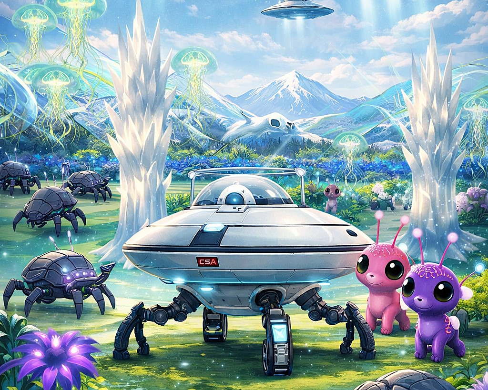
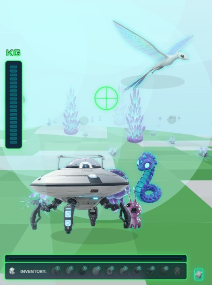
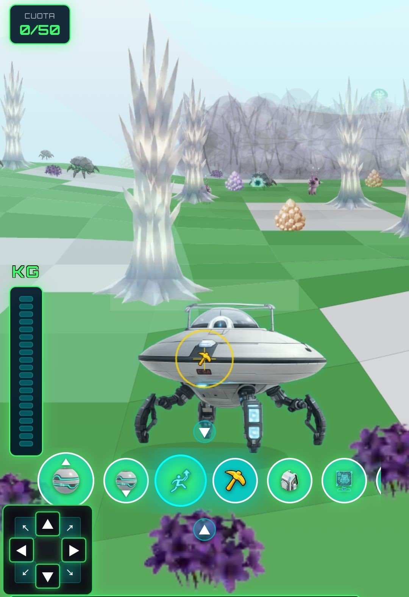
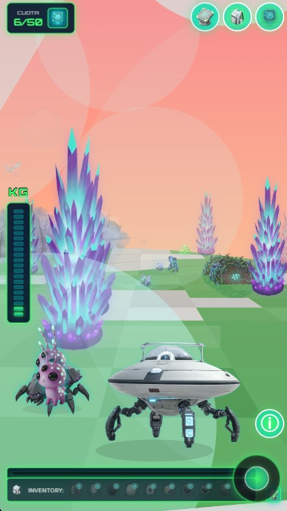
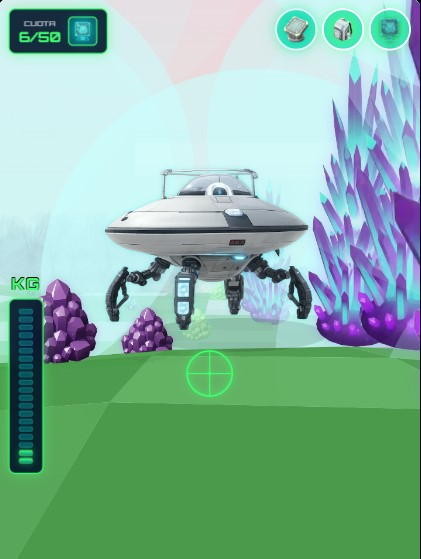
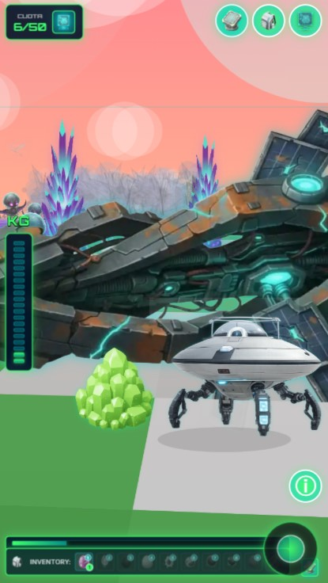
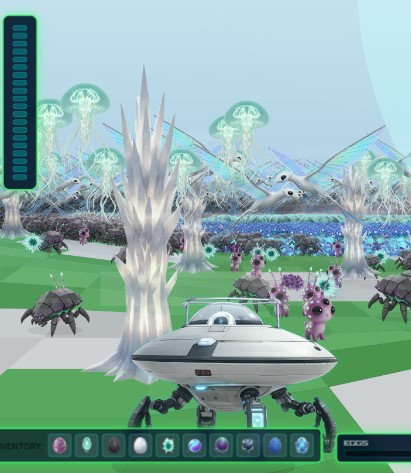

Controlas a un robot arácnido abandonado que despierta sin datos en un mundo procedural desconocido. Explora biomas alienígenas, cumple tu cuota de extracción y domina un ecosistema dinámico para desbloquear los niveles de datos perdidos.





